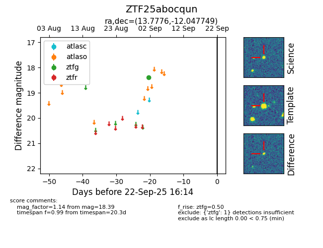

FINK: ZTF25abocqun
Lasair: ZTF25abocqun
ALeRCE: ZTF25abocqun
ZTF25abocqun (ztf,fink)
equatorial (ra, dec) = (13.7776,-12.04775)
galactic (l, b) = (126.3796,-74.89491)

last ztfg=18.39
1 ztfg detections